Splitting on the website
The website is a single file, chela.html, that runs entirely in your
browser. There is nothing to install and no network request: download it from the
release page, open it, and - ideally - turn off your network or use an offline
machine first. Everything below happens locally; your secret never leaves the page.
This walkthrough splits a wallet seed; to put it back together, see
recovery on the website. Splitting a text password is
the identical flow, just choose text instead of a seed phrase.
Want to click around first? Try the live app (demonstration only).
1. Choose to split
The opening screen offers two paths: split a secret into shares, or recover one from shares you already hold. Pick the split path.
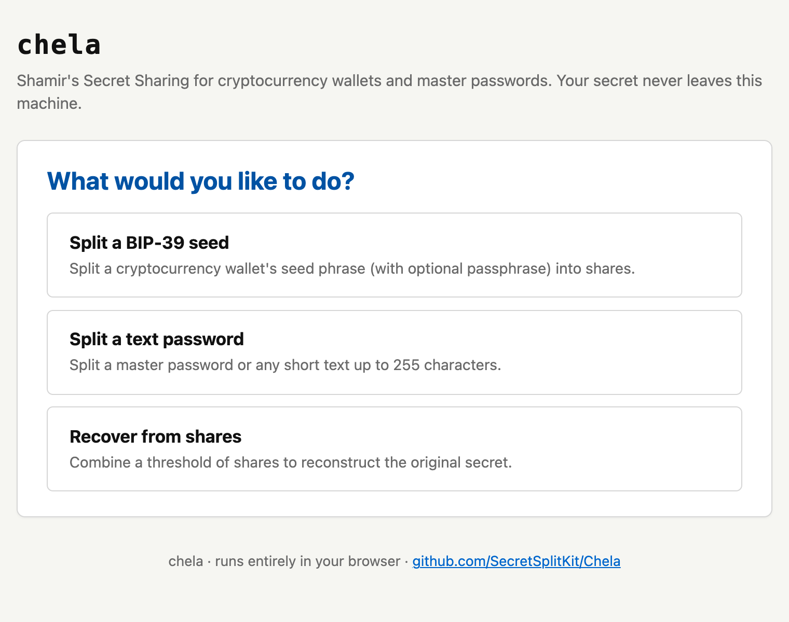
2. Enter the secret
Type or paste your BIP-39 seed phrase. The page validates each word against the wordlist and checks the mnemonic's built-in checksum as you go, so a wrong or misspelled word is flagged before you continue. If your wallet uses a passphrase (the "25th word"), add it in the optional field.
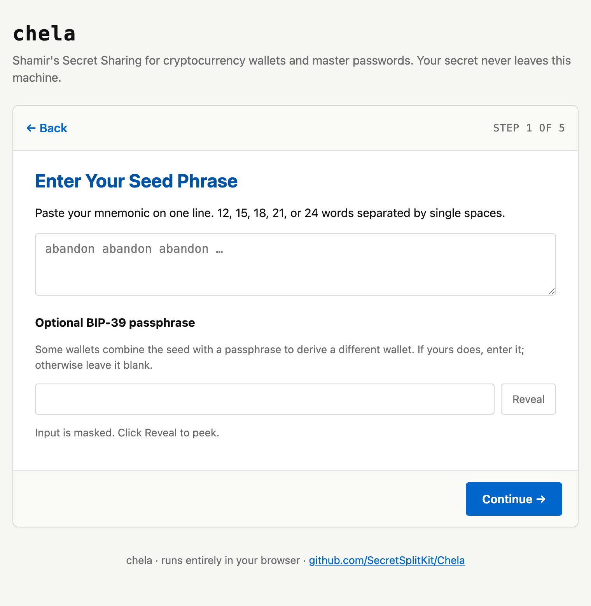
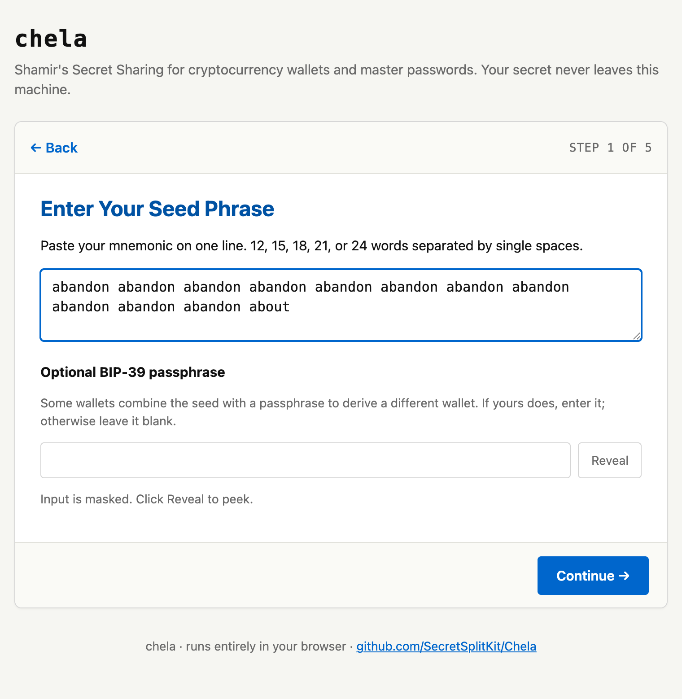
3. Set the recovery rule
Choose how many shares to make and how many it takes to recover - the
M-of-N rule. Presets cover the common cases (2-of-3, 3-of-5);
pick one or set your own. Any M shares recover the secret; fewer reveal
nothing at all.
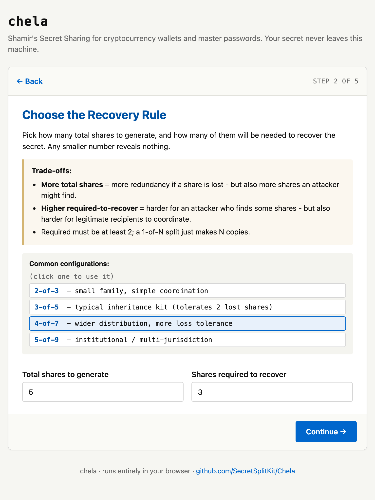
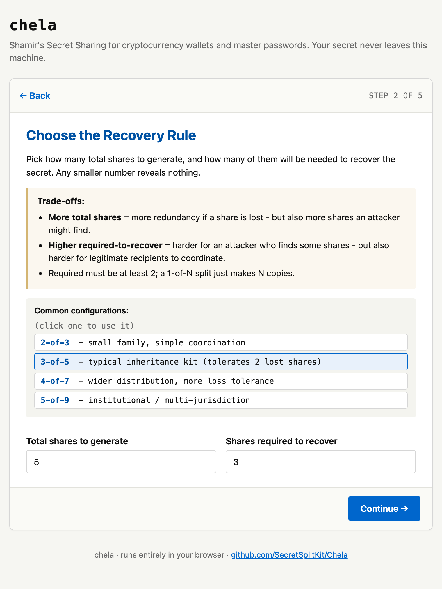
4. Decide whether to name the holders
Optionally label who gets each share. Names make the printouts easier to hand out, but printing the full roster on every share means one captured share reveals the whole group - so it is a deliberate trade-off, and chela makes you choose.
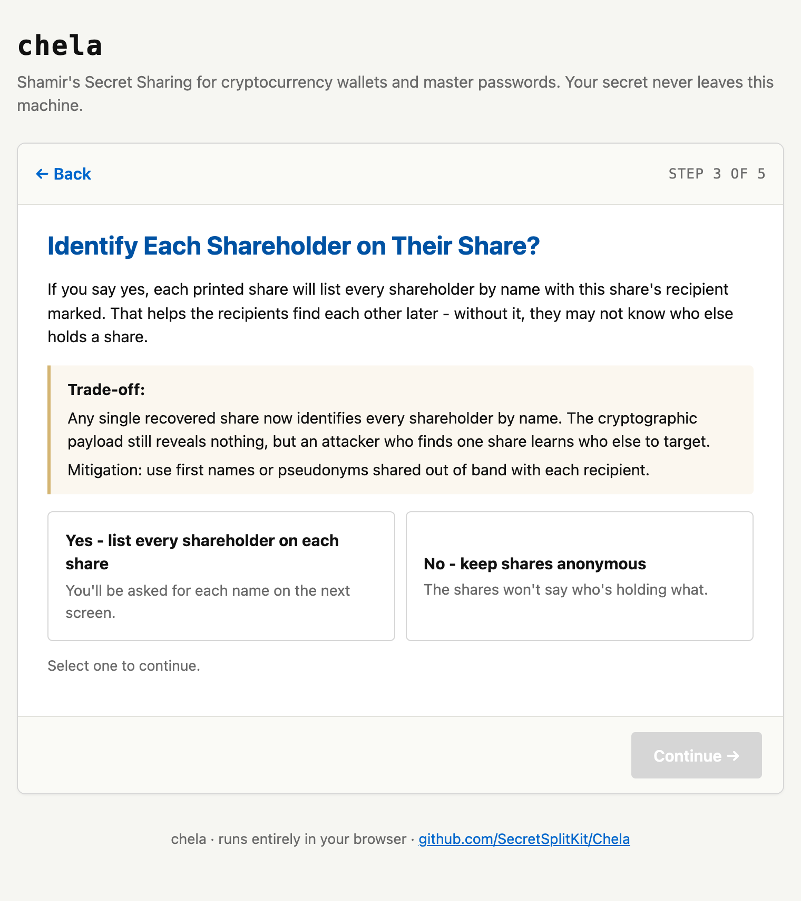
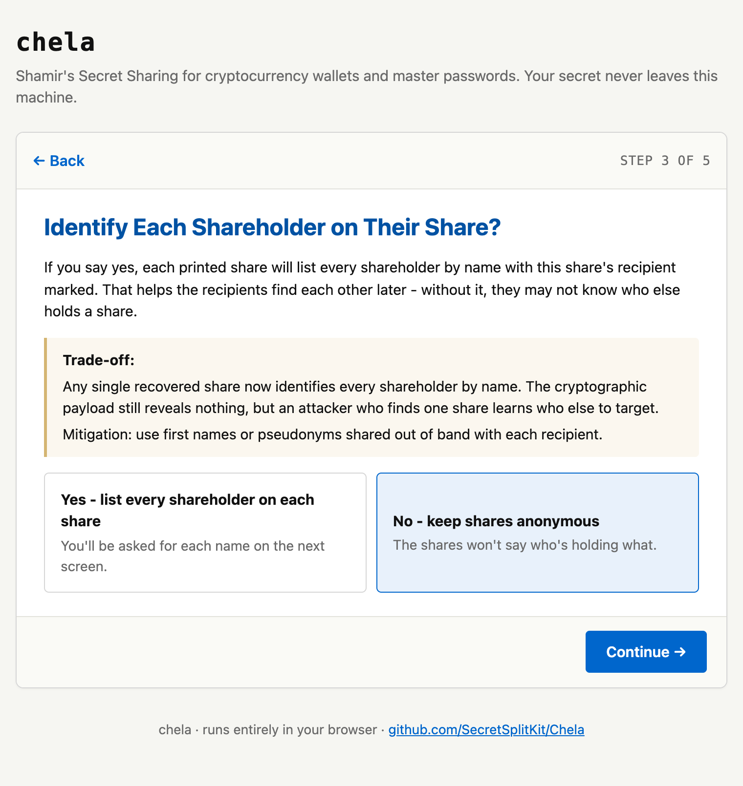
5. Label the backup
Give the set a name and an optional note - "Bitcoin cold wallet," "where the deed is," whatever future-you needs. This is printed at the top of every share so a holder knows what they are looking at.
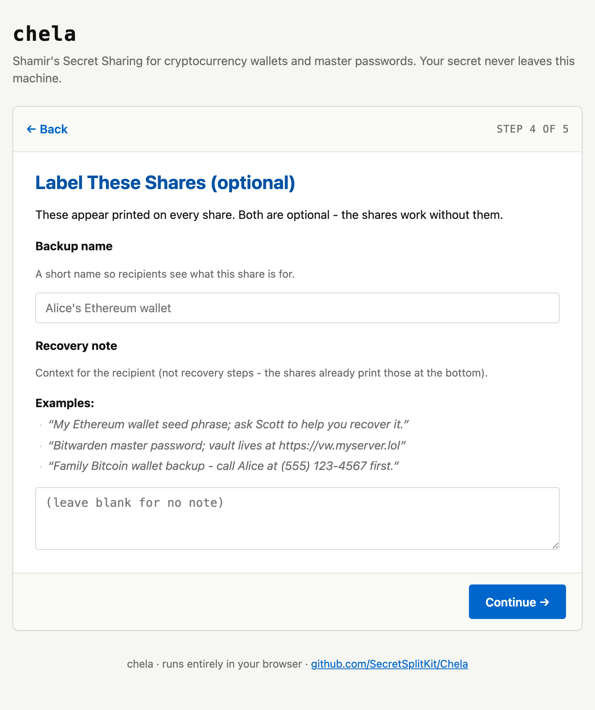
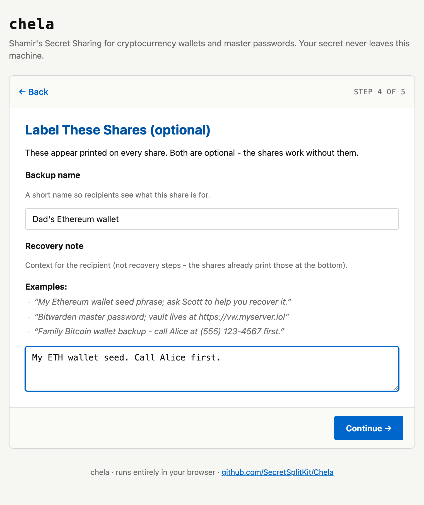
6. Confirm and generate
chela shows a summary - the rule, the labels, the holders - before it generates anything. Confirm, and it splits the secret locally and lays out the shares.
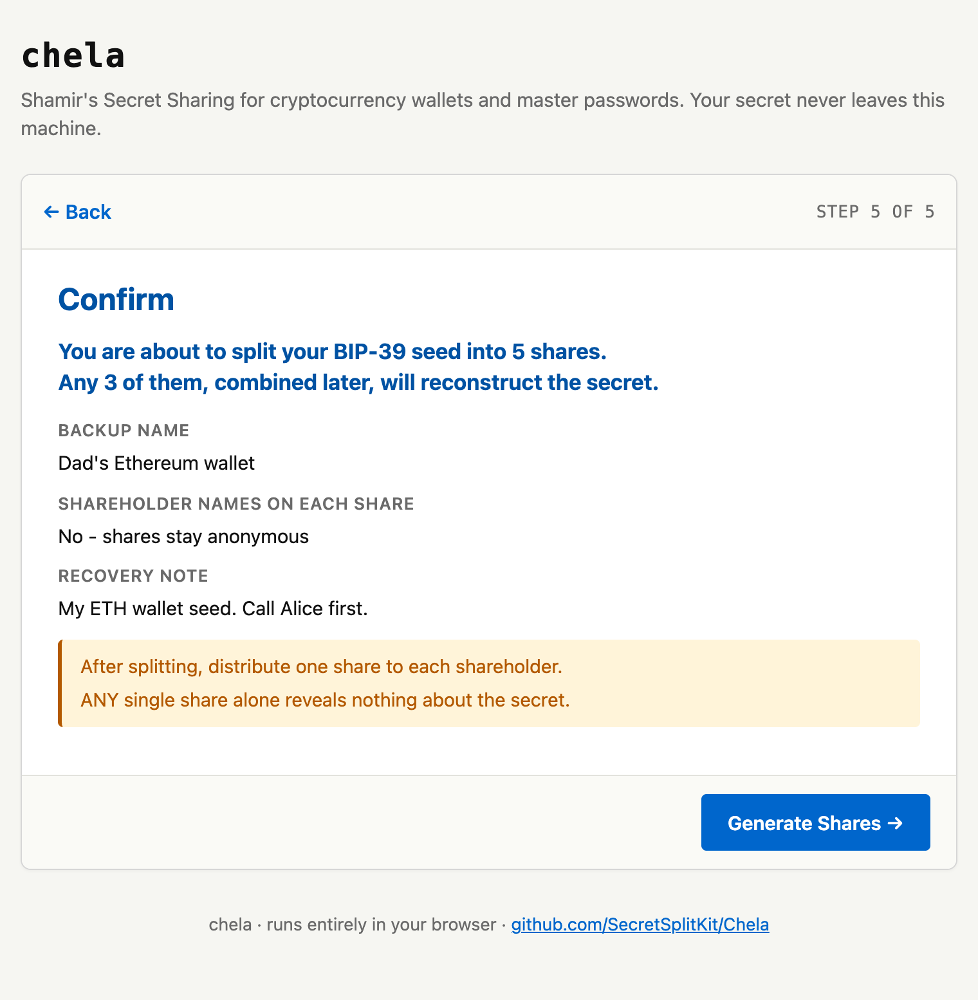
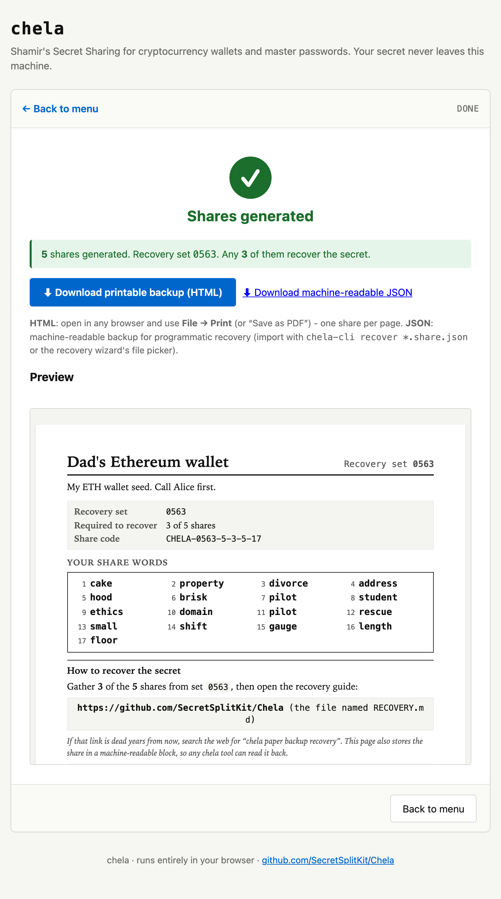
Next steps
Print each share (or save the page) and distribute them. When it is time to rebuild the secret, see recovery on the website. The same split is available in the terminal wizard and on the command line, and the words themselves are explained in the share format.